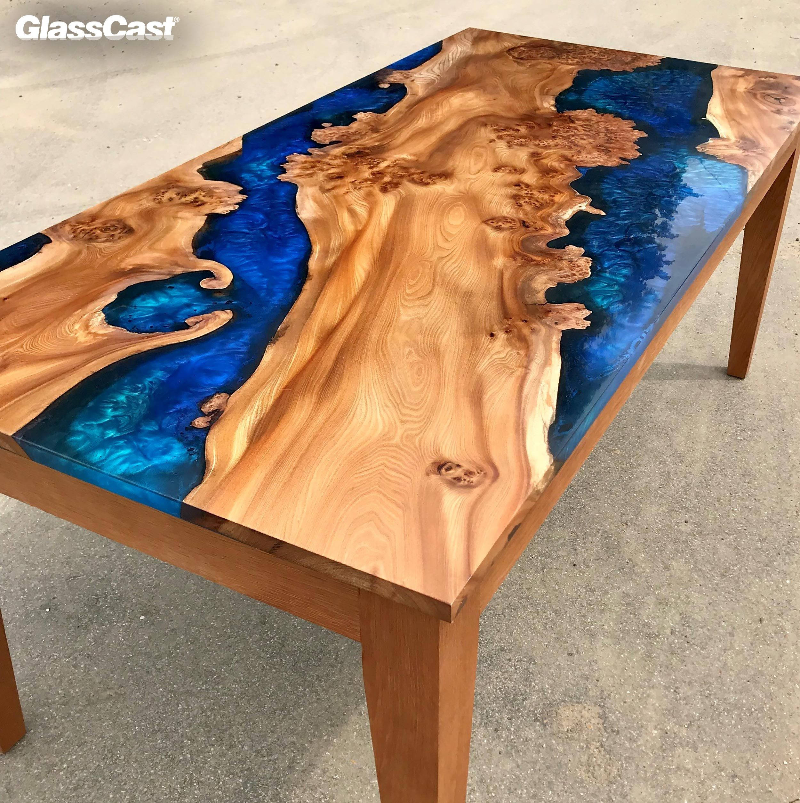

La resina epoxy, es un producto relativamente facil de manipular que se emplea cada vez más en proyectos de carpintería de diseño.
Se trata de un producto que se obtiene al mezclar dos componentes, la resina y el endurecedor. El material cataliza en una reacción exotérmica, y tras un curado de 1-7 dias ( que dependerá de la clase) queda sólido y endurecido, con un aspecto parecido al metacrilato.